Photos de Berlin
Bilder von Berlin
22-28 Mars 2023

Das Kulturforum vom Turm von Sankt Matthäus (2016-10)
|
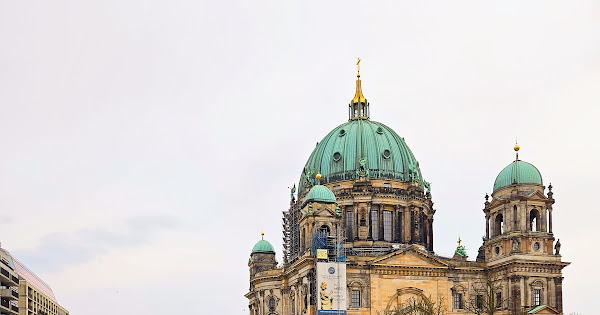 Berlin Dom - dimanche 23 mars 2025 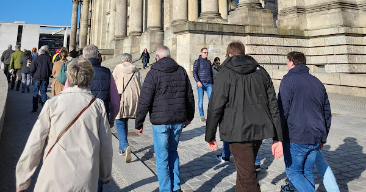 Berlin Reichstag - samedi 22 mars 2025 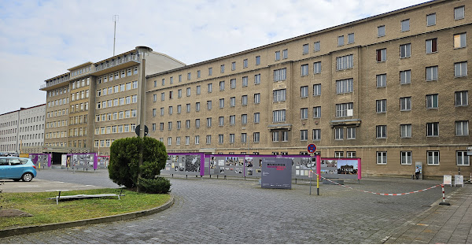 Berlin Stasi-Museum - 24 mars 2025 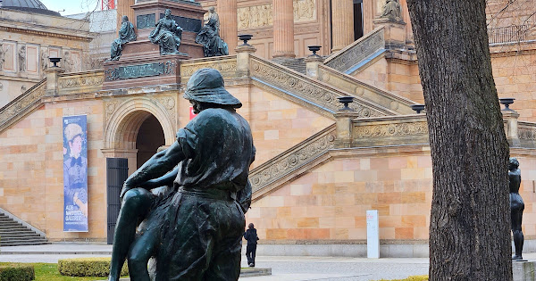 Alte Nationalgalerie und Neues Museum - 23 mars 2025 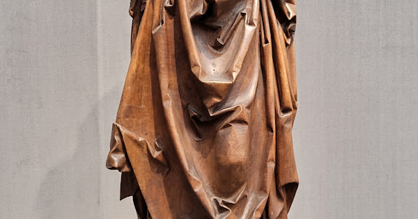 Berlin Kulturforum - 23 mars 2025 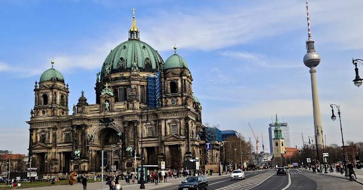 Museumsinsel - 23-31 mars 2025 |
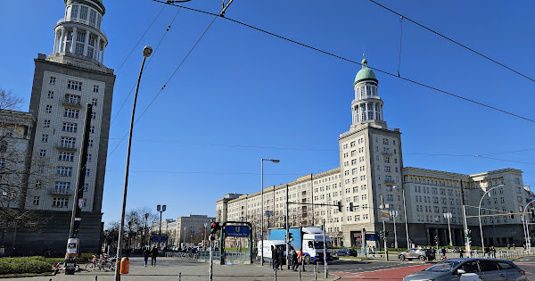 Matthäikirche und Karl-Marxallee - 28 mars 2025 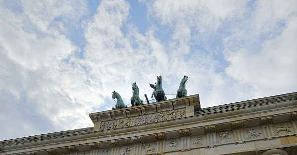 Brandenburger Tor und Philharmonie - 24 mars 2025 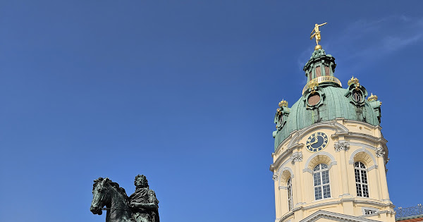 Schloss Charlottenburg - 25 mars 2025 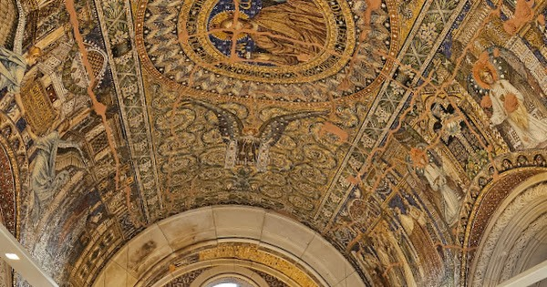 Gedächtniskirche und Siegessäule - 25 mars 2025 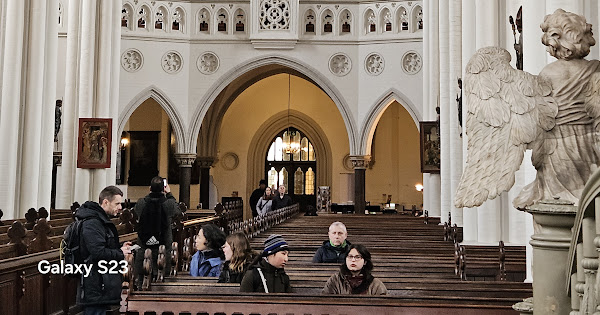 Marienkirche, Häckische Höfe, Mauerdenkmal, Oper - 27 mars 2025 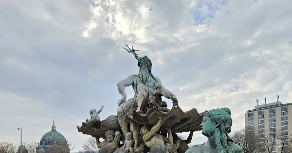 Alexanderplatz - 22-31 mars 2025 |
Index